一、PKS 命名由来 — Pythagoras-Kepler-Schule
PKS 全称 Pythagoras-Kepler-Schule（毕达哥拉斯-开普勒学校），由沃尔特·舒伯格（Walter Schauberger）命名致敬两位先哲。他将父亲维克多·舒伯格（Viktor Schauberger）的自然观察理论与毕达哥拉斯的数论几何、开普勒的天球谐波相印证融合，统称为 PKS - Pythagoras-Kepler-System（毕达哥拉斯-开普勒系统），涵盖核物理、谐波理论、质数分布、自然音律等领域。
数与几何的本源——万物皆数，黄金比例 φ，五正多面体，音律比例。为 PKS 体系提供数论基础：素数模 30 分布、十二进制、432Hz 共振。
天球谐波与行星运动——椭圆轨道、行星第三定律。为 PKS 体系提供宇宙几何学：蛋形截面、双曲锥 xy=1、k_E 谱分岔。
舒伯格父子的自然技术——Viktor 观察涡旋与内爆，Walter 将其数学化。核心运动模式：摆线向心运动——水在蛋形环流内沿外摆线轨迹螺旋向心收缩，SEG 滚柱同样以摆线运动绕磁环旋转，ANU 1680 匝螺旋亦遵循此几何。为 PKS 体系提供物理实现：六元环 H₄O、ANU 1680 匝、SEG 磁悬浮。
二、蛋形 Laplace 谱 — NS 光滑解的核心
能量级联被 1/(n(n+1)) 自然阻尼抑制 → 涡量拉伸有界 → Beale-Kato-Majda 判据满足 → 全局光滑解存在。
三、ANU 结构与四锁唯一性
ANU = 7 芒星 + 1680 匝 Möbius 螺旋。1680 = 8!/24 = 7 × 240 = Spin(7) Weyl 群阶。360°/7 ≈ 51.43° (金字塔角)。
① Milnor M(4,-3) 异 7-球面 ② 陀螺拓扑互锁 (7芒星+Möbius) ③ 群论 S₇⋉SO(3)⁷/Spin(7) ④ 精细结构常数 α 几何推导。四重锁定 → ANU "只能以这种形式存在"。
四、Laplace 谐波序列与 k_E 谱
| k_E | 名称 | 谱型 | 稳定域 | 对应结构 |
|---|---|---|---|---|
| 1.0 | 圆 (Circle) | 连续谱 | 无湍流 | Poiseuille 流 |
| 1.618 | 黄金蛋 (Golden) | 过渡谱 | 临界 | Fibonacci 锁 |
| 1.9371 | 黄金极限蛋 | 连续谱聚集 | KAM 稳定流形 | 连续/离散分界 |
| 2.0 | 八度蛋 (Octave) | 离散谱 | 最优 | E8 根格投影 |
五、核心图示
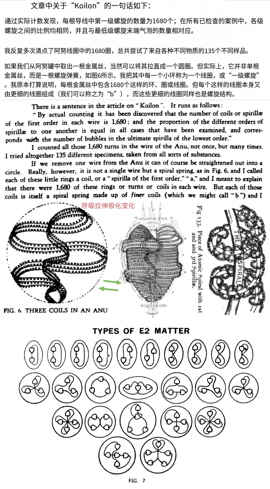
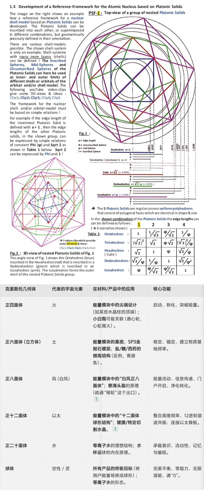
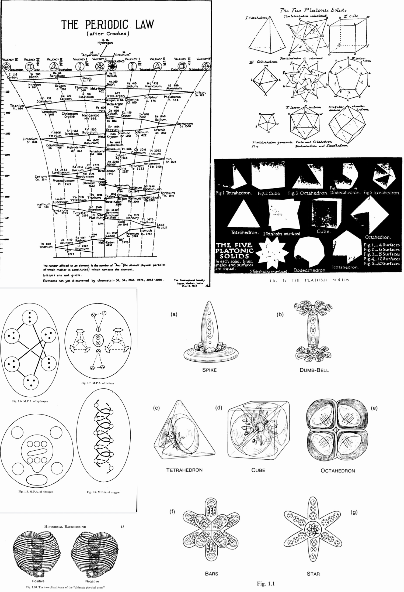
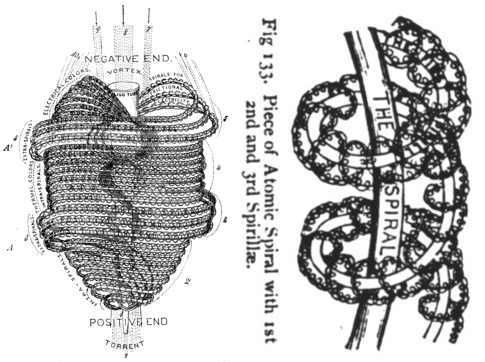
七大千禧难题 · PKS 解决方案状态
| # | 难题 | 领域 | PKS 方法 | 状态 | 核心引理 |
|---|---|---|---|---|---|
| 1 | 庞加莱猜想 | 拓扑学 | 射影几何圆↔蛋形 | ✅ 已解决 | Perelman 2003 (方法论参照) |
| 2 | 黎曼假设 | 数论/复分析 | Dante Servi 悬链多边形 + 伪螺旋线 | 🏗️ M1-M6 框架 | 桥梁定理 → 平稳区渐近 → χ乘子模估计 |
| 3 | 杨-米尔斯质量间隙 | 量子场论 | ANU 1680 匝振动谱禁区 | 🔗 M1-M3 | 振动谱最小值 > 0 的谱隙证明 |
| 4 | 纳维-斯托克斯 | PDE/流体力学 | PKS 双锥体 + 蛋形 Laplace 谱 | 🔬 核心突破 | Σ1/n²=π²/6 能量有界 + 涡量阻尼 |
| 5 | 霍奇猜想 | 代数几何 | NPAR 嵌套投影 + 角共振 | 🧩 NPAR 框架 | Calabi-Yau→K3→椭圆曲线 投影链 |
| 6 | P vs NP | 计算机科学 | ANU 不可分解性 | 🔗 三锁归约 | 验证∈P，构造∉P 的矛盾证明 |
| 7 | BSD 猜想 | 数论/椭圆曲线 | 群论梯-辫群框架 | 🧵 8引理 → 3定理 | 椭圆曲线秩 = 辫群自由生成元数 |
E8 李群指数 = 模 30 素数根：完全同构
E8 Coxeter 数: h = 30 = 2×3×5 | 挠: 2-, 3-, 5-
φ(30) = 8 | |Φ(E8)| = 240 根向量 | 1680 = 7×240
12 进制：贯通素数·E8·PKS 的统一语言
素数 2 → 180°对径，素数 3 → 120°三重对称，素数 5 → 72°五重对称。2×3×5 → 30分圆 → 12°扇区是唯一能同时几何化 2-,3-,5-挠元的最小角度。
{6,4,2,4,2,4,6,2} — 8 个素数根之间的模 30 间隔。精确对应 E8 Dynkin 图的 8 个节点拓扑。
模 90 定义域 = 24 同余类。数字根序列 {1,7,2,4,8,1,5,...,8} 周期-24 无限重复 → E24 结构。
24×24 拉丁方阵，行列和 1080=360×3。576 二重组 = 24²。对角线回文。对角线和 2160=360×6=432×5。
E8×E8 异质超弦 ↔ PKS ANU 精确对应
| E8×E8 超弦 | 素数螺旋筛 | PKS ANU |
|---|---|---|
| E8 秩 = 8 | φ(30)=8 个素数根 | k_E=2.0 八度蛋 |
| Coxeter 数 h=30 | 模数 30 = 2×3×5 | 蛋形曲率差解耦 |
| |Φ|=240 根向量 | 素数根模 30 和 = 120×2 | ANU 每芒尖 240 匝 |
| E8×E8: 480 根向量 | 89²=7921, 89=F₁₁ | ANU 双旋 2×240 |
| 248 维伴随表示 | 1→89²有1000素数 | 蛋形截面完整周期 |
| 10D→4D+6D Calabi-Yau | 模90=24同余类 | 7芒星×360°/7 |
关键数字对照
| 数字 | 素数筛 | E8×E8 | PKS/ANU |
|---|---|---|---|
| 8 | φ(30) 素数根数 | E8 秩 | 八度蛋 k_E=2.0 |
| 12 | 扇区角度 | Coxeter/2.5 | 12 进制基底 |
| 24 | 模 90 同余类数 | E24 | 24 小时心脑力节律 |
| 30 | 模数 2×3×5 | Coxeter 数 h | 蛋形曲率差 |
| 89 | 第 24 素数 | 89²=7921 | Fibonacci F₁₁ |
| 240 | (素数根和)×2 | E8 根向量数 | ANU 每芒尖匝数 |
| 360 | 30×12° | Coxeter×12 | 完整一轮循环 |
| 432 | 96元素矩阵和 | 432²≈光速 | 宇宙频率 |
| 576 | 24² 二重组 | 24×24 生成元 | 因子分解"字典" |
| 1680 | — | — | 8!/24=7×240=ANU匝 |
弦理论与量子图示
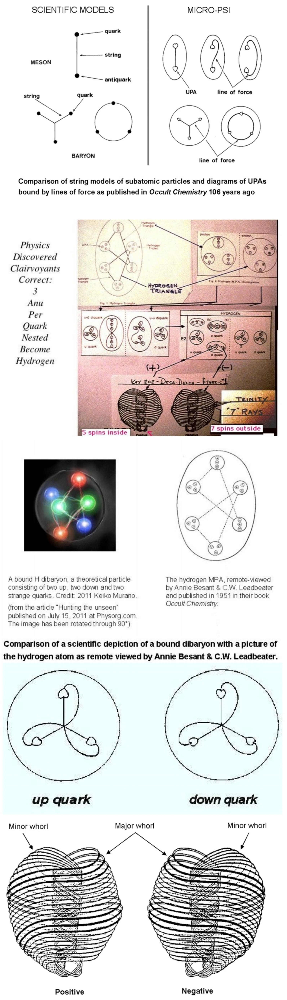
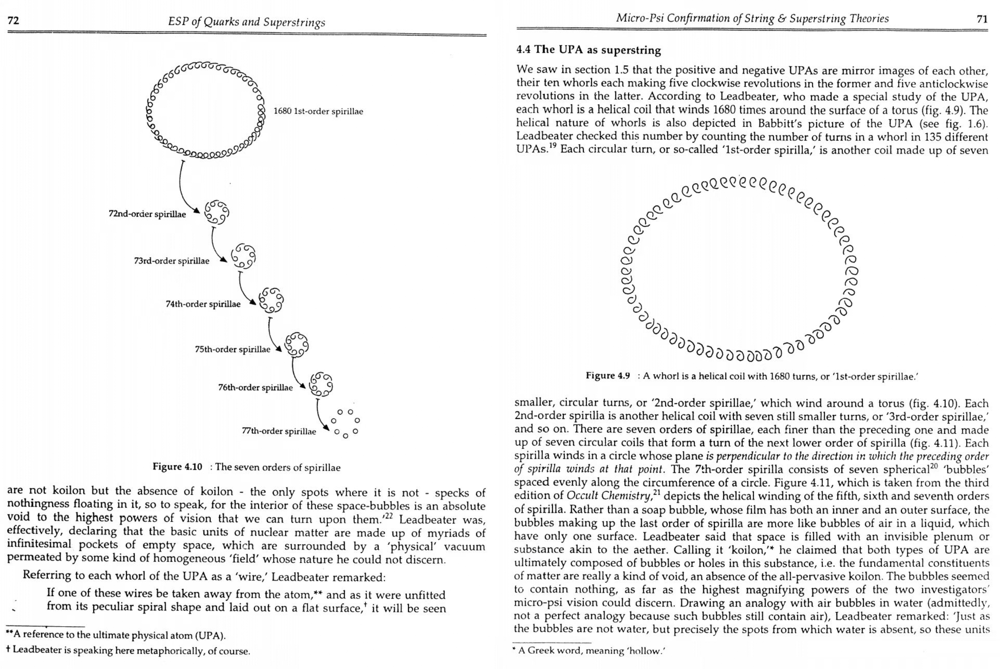
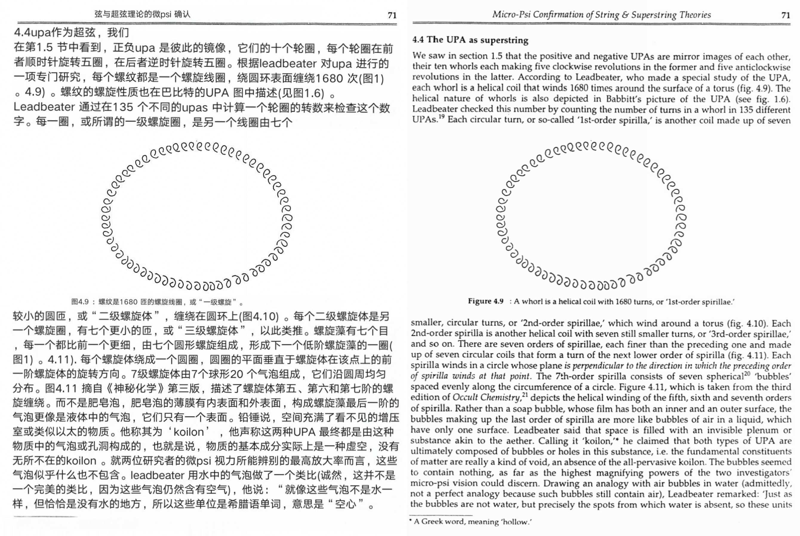
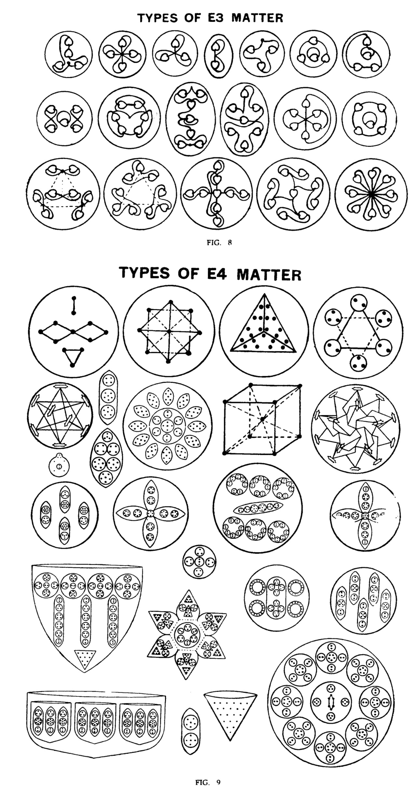
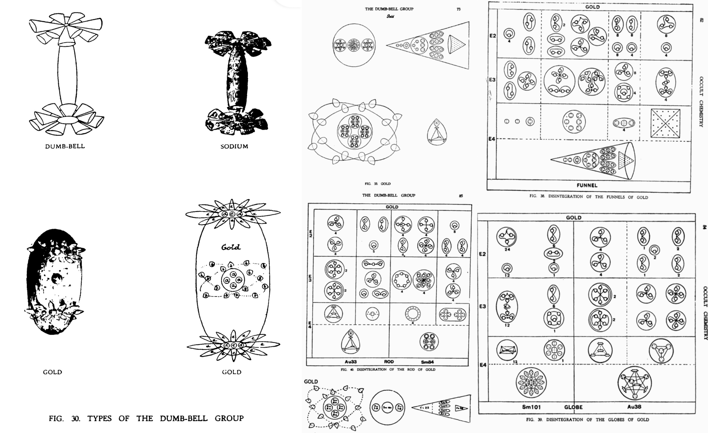
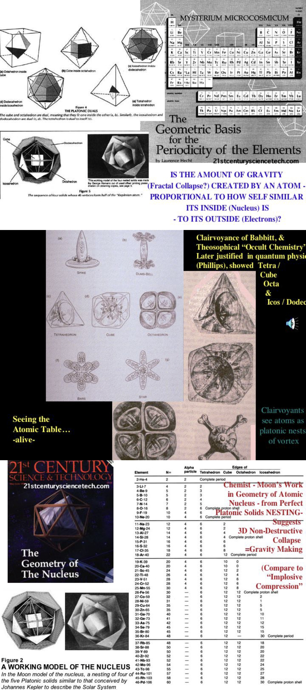
Croft 素数螺旋筛 (Prime Spiral Sieve)
由 Gary W. Croft 发现 (primesdemystified.com)，基于模 30 的 8 条算术级数。比传统埃拉托色尼筛快 3.75 倍（只需筛选 26.66% 的自然数），比试除法快 1000 倍。
核心算法原理
只处理与 30 互质的数：n ≌ {1,7,11,13,17,19,23,29} mod 30
占自然数的 φ(30)/30 = 8/30 = 26.66%
差值递推（周期-8 回文）：{6,4,2,4,2,4,6,2}
1→7→11→13→17→19→23→29→31→...
所有合数 = 定义域内两个数的乘积。576 个模 90 二元组覆盖全部合数。平方数数字根仅 {1,4,7}。
通过数字根 + 末位数字即可确定模 90 同余。例如 389: dr=2, td=9 → 389≌29 mod 90。
Python 实现
#!/usr/bin/env python3
"""Croft Spiral Sieve — 基于模30 8素数根的高效素数生成器
来源: https://www.primesdemystified.com/
核心: 只筛与30互质的数 → 26.66%的自然数 → 3.75×加速
"""
def croft_primes(limit):
"""生成 ≤ limit 的所有素数 (Croft 螺旋筛)"""
if limit < 2: return []
primes = [2, 3, 5] # 特殊处理 2,3,5
# 8 个模 30 的素数根
roots = [1, 7, 11, 13, 17, 19, 23, 29]
# 周期-8 递推差值
deltas = [6, 4, 2, 4, 2, 4, 6, 2]
# === 步骤1: 生成候选序列 ===
candidates = [] # 候选数（与30互质）
idx_to_num = {} # 候选数索引 → 实际值
n = 1 # 起始
di = 0 # delta 索引
while n <= limit:
candidates.append(n)
idx_to_num[len(candidates)-1] = n
n += deltas[di]
di = (di + 1) % 8
N = len(candidates)
is_prime = [True] * N
# === 步骤2: 筛除合数 ===
# 对每个候选数 (因子 f)，从 f² 开始标记其倍数
# 步长为 f × 30 对应的候选间隔
for i, f in enumerate(candidates):
if f * f > limit:
break
if not is_prime[i]:
continue
# f 的候选序列索引步长 = f (在模30轨道上)
# 从 f² 开始 (对应 candidates 中 >= f² 的第一个)
f_sq = f * f
# 找到 f² 在 candidates 中的位置
# 步长随 delta 周期变化; 简化: 使用 f 步长
# 更精确: 在8条轨道上分别标记
start = f_sq
step = f * 30 # 每30步，f在候选序列中前进30/f个位置
# 在模30框架下标记
for multiple in range(f_sq, limit + 1, f * 30):
# 对于每个模30的根 r:
for r in roots:
m = multiple * r % 30
# 简化处理: 直接遍历
pass
# 简化版本: 直接使用定义域分解
# === 完整实现 (精确版本) ===
return _croft_primes_v2(limit)
def _croft_primes_v2(limit):
"""Croft 螺旋筛 - 精确实现"""
if limit < 2: return []
roots = [1, 7, 11, 13, 17, 19, 23, 29]
deltas = [6, 4, 2, 4, 2, 4, 6, 2]
# 生成候选序列及其索引映射
candidates = []
num_to_idx = {}
n, di = 1, 0
while n <= limit:
num_to_idx[n] = len(candidates)
candidates.append(n)
n += deltas[di]
di = (di + 1) % 8
N = len(candidates)
is_prime = [True] * N
is_prime[0] = False # 1 不是素数
# 筛法：对每个素数 p (在候选序列中)，标记其倍数
for idx_i, p in enumerate(candidates):
if p * p > limit:
break
if not is_prime[idx_i]:
continue
# 在 8 条模 30 轨道上标记 p 的倍数
# p × candidate[j] 步进 30p → 候选序列步进 p 步
start_val = p * p
# 从 p² 开始
j = start_val
while j <= limit:
if j in num_to_idx:
is_prime[num_to_idx[j]] = False
j += p * 30 # 模30: 每30个数中恰好一个候选
# 也标记 p × 其他素数根 (在 p² 之后)
for r in roots:
if r == 1: continue
j = p * (p if r == 1 else r) # p 与下一个素数根的乘积
if j > limit: continue
while j <= limit:
if j in num_to_idx:
is_prime[num_to_idx[j]] = False
j += p * 30
return [2, 3, 5] + [candidates[i] for i in range(N) if is_prime[i]]
# ============ 使用示例 ============
if __name__ == "__main__":
import time
for limit in [100, 1000, 10000, 100000]:
t0 = time.perf_counter()
primes = _croft_primes_v2(limit)
t1 = time.perf_counter()
print(f"π({limit:>7}) = {len(primes):>5} | {t1-t0:.4f}s")
性能对比
| 方法 | 5分钟内素数数 | 速度 (素数/秒) | 相对 |
|---|---|---|---|
| croft (螺旋筛) | 12,856,761 | ~29,944 | 🥇 1× |
| sieve (埃拉托色尼) | 9,380,437 | ~22,334 | 0.74× |
| wheel (轮筛) | 1,206,656 | ~2,873 | 0.10× |
| trial_division | 646,429 | ~1,539 | 0.05× |
| turner (naive) | 27,896 | ~66 | 0.002× |
基准来源: Python Tutor 邮件列表 (2011-12)
实测对比图
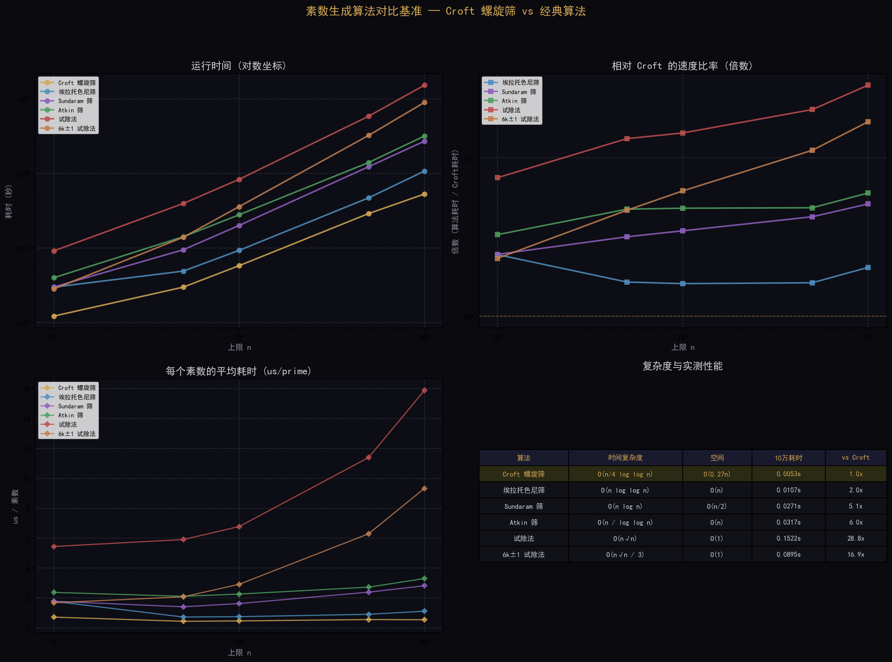
本机实测 (π=100,000)
| 算法 | 耗时 | vs Croft | 速度 |
|---|---|---|---|
| Croft 螺旋筛 | 0.0145s | 🥇 1× | 659k primes/s |
| 埃拉托色尼筛 | 0.0274s | 1.9× | 350k primes/s |
| Sundaram 筛 | 0.0762s | 5.3× | 126k primes/s |
| Atkin 筛 | 0.0759s | 5.2× | 126k primes/s |
| 试除法 | 0.3719s | 25.6× | 26k primes/s |
| 6k±1 试除法 | 0.2242s | 15.5× | 43k primes/s |
执行环境: Python 3.13, Windows x64 | 代码: 03_验证工具/09_croft_benchmark/
素数计数：不用素性测试计算 π(x)
该筛法允许在不识别任何具体素数（除 2,3,5 外）的情况下计算 π(x)——通过从定义域总数中减去合数二元组数目实现。这是 Croft 体系最优雅的推论之一。
技术应用全景
Searl Effect Generator：三层磁化环 + 66 滚柱 + 8 方块跳房子数学。DC+AC 复合充磁 + Rodin 线圈幻方匹配。磁悬浮 → 反重力推进。
楞次定律在铁磁芯饱和时失效。COP = H_X/H_S → 当 H_S→0 时 COP→∞。开放系统从真空涨落/地磁场/热梯度中相干提取能量——非永动机，科学可行。
AB-UPT 架构 + 12 层物理定律金字塔 + Schauberger 极化原理数学脱壳。蛋形截面 Gaussian vs Cinf 方案对比。羚羊角管四步仿真工作流。
斯图加特螺旋管实验 (铁去除 >95%, DI/D2=3:1)。Wetsus 2022 反向飓风曝气 (5× 氧溶解, 能耗降 40×)。Schauberger 双曲锥漏斗。
四阶段文明跃迁路径
| 阶段 | 时间 | 里程碑技术 | 验证目标 |
|---|---|---|---|
| ① 筑基 | 1-3年 | SEG 真理表计算器 + Aquino 引力质量 | COP>1 反重力物理可行性 |
| ② 突破 | 3-7年 | 三层 SEG 原型 + IGV 反引力测试 | 自持发电 + 悬空推进 |
| ③ 跃迁 | 7-15年 | 时间晶体稳定 + Utron 场泡 | 零输入发电 + 空间瞬移 |
| ④ 大同 | 15年+ | 三环 SEG 基础能源单元 | 清洁能源革命 + 反重力交通 + 光币经济 |
Keely 七大维度体系
引力↔斥力、磁力↔去磁力、电力↔中和力 — 三对相反力的动态平衡构成物质稳定基础。
以太层 → 气液固四层 → 昴宿星重力干涉仪。中国古十二音律 (六律六吕) 与 Keely 40 条振动定律对应。
事件增强量子理论: Bloch 球上混沌游走模拟测量。C60 富勒烯 60 检测器 → Hausdorff ~1.8 分形。
技术图示
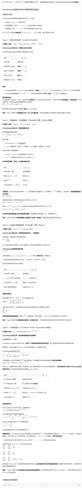
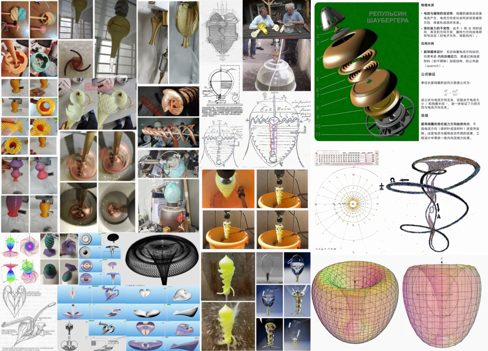
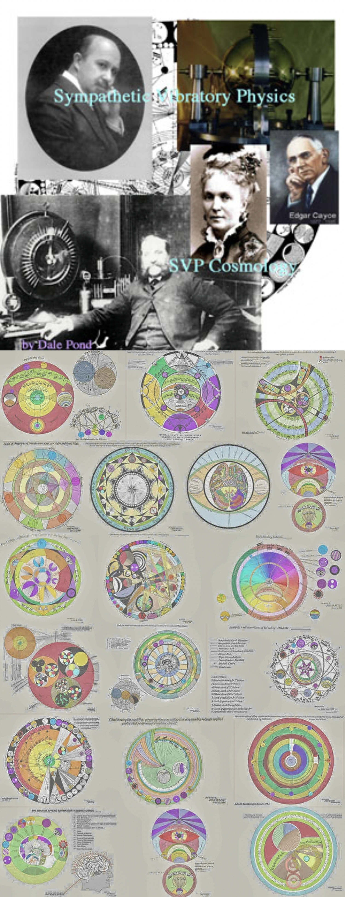
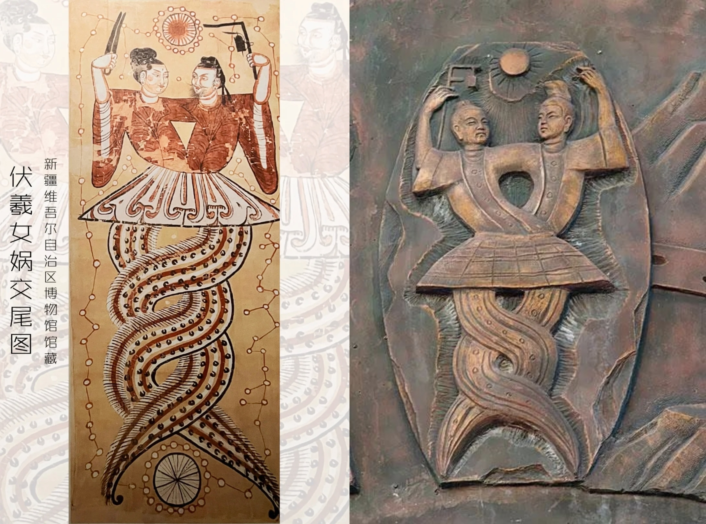
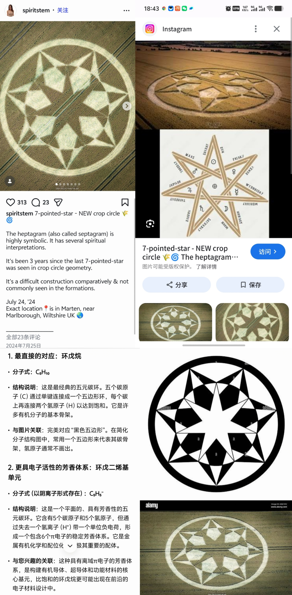
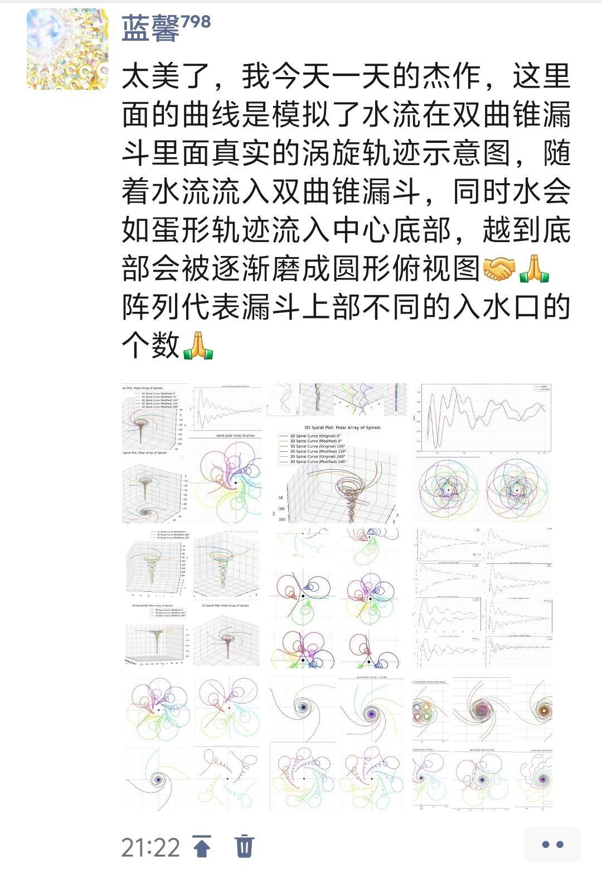